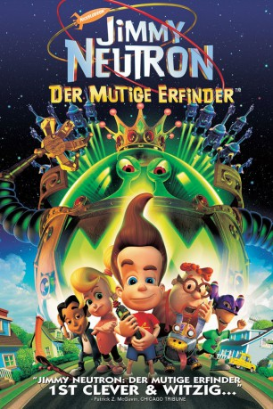

#12278 Jimmy Neutron: Der mutige Erfinder
Alternativ: Jimmy Neutron: Boy Genius (Englischer Titel)
Auszeichnungen: für 1 Oscars nominiert
 
 IMDB-Wertung: 6.0 / 10
IMDB-Wertung: 6.0 / 10  Metascore: 65
Metascore: 65 
Der Schüler Jimmy Neutron ist ein Wunderkind und Erfinder. Als die Erwachsenen jedoch von Aliens entführt werden, stehen Jimmy auf einmal Probleme ins Haus - denn nur er kann sie retten. Nominiert für den Oscar als bester Animationsfilm.
Jahr: 2001
Dauer: 79 Minuten
FSK: 0
Land: USA Studio: Paramount PicturesTonspuren: - , - ,
Untertitel:
Auflösung: 1080p (1920x1080) Größe: 5969 MB
Genre: Action, Sci-Fi, Komödie, Abenteuer, Animation/Trick, Familie
Regisseur: John A. Davis
Drehbuch: John A. Davis, Steve Oedekerk, David N. Weiss, J. David Stem, Danelle Hand
Soundtrack: Brian Causey, John Debney
Darsteller:
Datei: Gemischt-01+AnimeG:\Download\Jimmy Neutron Der mutige Erfinder (2001, FSK0, 1920x1080).mkv seit 12.01.2020
 Es gibt insgesamt 16 Filme in der Gruppe 'Gemischt-01+AnimeG:\Download'
Es gibt insgesamt 16 Filme in der Gruppe 'Gemischt-01+AnimeG:\Download'